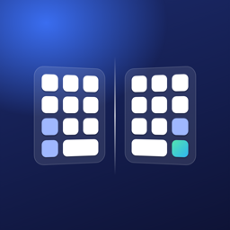

Foldboard
The keyboard made for iPhone Duo
Set up the keyboard
- Open Foldboard, tap Add Foldboard to your keyboards, then Open Settings.
- Tap Keyboards, turn on Foldboard, then Allow Full Access (for vibrations, sounds and your settings).
- In any app, hold the globe key 🌐 and pick Foldboard.
The keyboard follows your hand
In “Follows your hand” mode, Foldboard looks at how the phone leans when the keyboard opens, then at your thumb while you type. Hold the open Duo with both hands and it splits in two. To make it more accurate, calibrate it in the app (Position and size → Follow your hand). Swiping your thumb up on the keys brings the keyboard to your side.
Trial and purchase
Every feature is free for 3 days, with no subscription. After that, Foldboard Pro is a one-time purchase. One-hand typing, full width, AZERTY and QWERTY stay free. To get your purchase back: Foldboard Pro screen → Restore purchases.
Contact
Questions, ideas, bugs: hfreecsapple@gmail.com